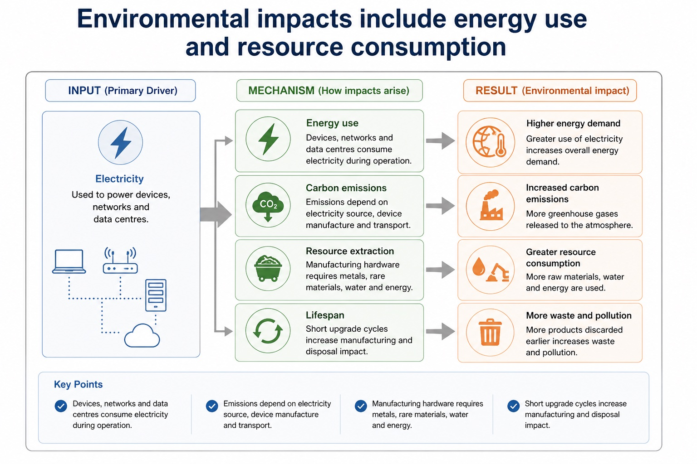

Artificial intelligence, its applications and its social, economic and environmental impacts
Visual overview
Environmental impacts include energy use and resource consumption

Visual transcript
- Energy use Devices, networks and data centres consume electricity during operation.
- Carbon emissions Emissions depend on electricity source, device manufacture and transport.
- Resource extraction Manufacturing hardware requires metals, rare materials, water and energy.
- Lifespan Short upgrade cycles increase manufacturing and disposal impact.
Core explanation
Artificial intelligence (AI) applications include classification, recommendation, prediction and autonomous control. Every AI evaluation should identify the application or decision mechanism and trace social, economic and environmental impacts before reaching a contextual judgement with realistic mitigations.
Artificial intelligence, its applications and its social, economic and environmental impacts.
Social impacts include access, bias and privacy; economic impacts include productivity, job redesign and error cost; environmental impacts include data-centre energy/material use and optimisation of transport or power. Evaluation balances benefits, harms and mitigations in context.
To evaluate an AI application, balance its social, economic and environmental impacts and reach a context-linked judgement.